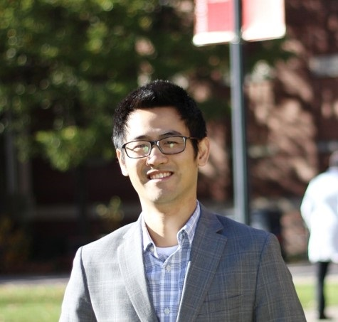
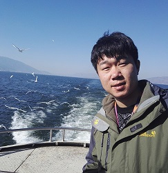
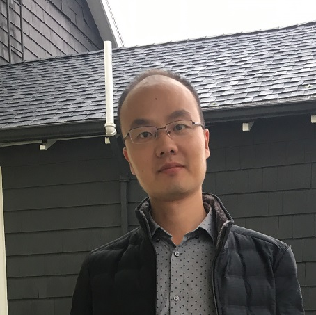
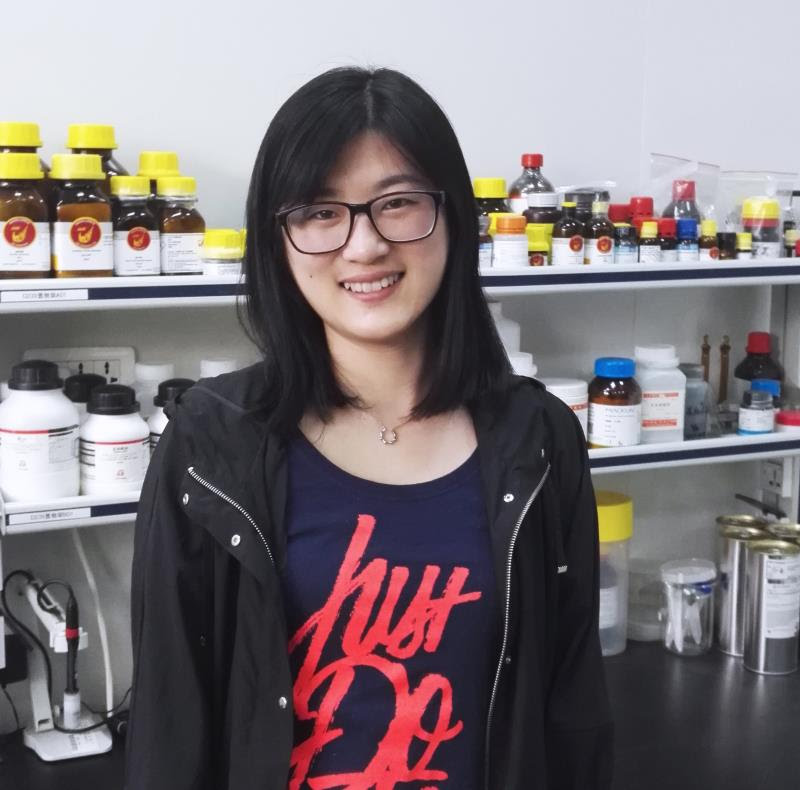
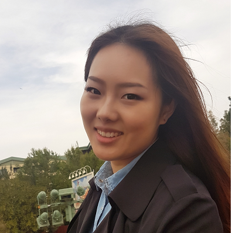
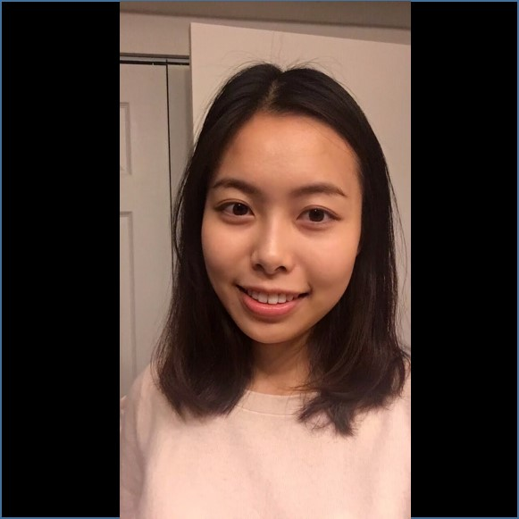

Implant detects spreading
cancer cells early.
Oxygen consumption can be
measured by visible-light
optical coherence tomography.

First in vivo human retinal imaging
by visible-light
optical coherence tomography.
Inverse spectroscopic optical coherence
tomography: a new method can detect tissue
sub-diffractional structral alterations in early cancers.
Visible-light optical coherence tomography
can concurrently measure blood oxygen saturation
and blood flow, and thus infer local oxygen metabolism.
Research Interests
Functional imaging aims to provide local functional information supplementing the structural images. In biological tissue, specific molecular compounds can provide distinct optical signatures (e.g. Raman scattering and autofluoresence), so that local molecular composition and metabolites can be assessed and quantified. On the other hand, haemodynamics serves an excellent functional indicator since all the oxygen and nutrients are provided through the circulation system. Within a microvascular network, a concurrent measurement of blood oxygen saturation and flow infers oxygen metabolism, which reflects the tissue metabolic function. One of the examples is to use visible-light optical coherence tomography (vis-OCT) to measure oxygen metabolism. We have demonstrated the feasibility of vis-OCT in animal models and human, and in different organ sites including cortex, retina and skin. Measuring oxygen metabolism by vis-OCT has not only great clinical potentials, but also an excellent tool to study structural and functional relation in biological systems.
In addition to microscopy, endoscopy is another major form of application for optical imaging. Because of the inherent limitation on penetration depth, optical systems need to be miniaturized and packaged into a small fiber-based probe for internal organs. Noninvasive use of endoscopy can be readily applied to gastrointestinal and respiratory tracks. The miniature probe can also be applied to image cardiovascular vessel lumen through a small surgical insertion, or image solid organs (e.g. liver) through a needle puncture. We are interested in developing novel endoscopic system and method for disease screening purpose, with requirement of easy use, low cost, automation and quantification.
For more than one century, Abby’s diffraction limit defines the smallest feature that is resolvable by optical microscopy to about 0.5 microns. The development of super-resolution microscopy has broken this limit and achieved nanometer resolution down to the order of 10 nanometers. This nanoscopic capability enables direct imaging of individual macromolecules in live cells. The caveat is that most of the super-resolution microscopy cannot be applied to thick samples. One solution is to develop multi-photon microscopy with laser scanning super-resolution technique, which could achieve nanoscale resolution and up to several hundred microns penetration depth. Another approach is to rely on the stochastic analysis of the elastic light scattering, instead of direct visulization. The elastic light scattering solely depends on the native tissue structures, or more specifically, the fluctuation of refractive index. The resultant scattering signal contains information from all the length scales. We have developed a method called inverse spectroscopic optical coherence tomography to quantify sub-diffractional tissue structures. The extraordinary sensitivity to nanoscale structural alterations enables the detection of early cancer and metastasis.
One major focus of this lab is to translate the novel technology to clinics, and ultimately benefit the general public. Many chronic diseases, such as cancer, are still extremely difficult to treat/cure if diagnosed at a late stage. Early detection is not only important for understanding them, but perhaps the only way to effectively treat them. Also, by the way of detecting disease progression, evaluation of treatment, drug efficacy and risk prediction can all potentially benefit the outcome of the health care and saving the future medical cost. We have applied our technique to detect field carcinogenesis (an earliest form of cancer) in colorectal and pancreatic cancers, breast cancer metastasis, and blinding retina-related disease. We are eager to develop more novel techniques and explore more clinical applications.
people
principle investigator
Ji Yi
Ji Yi
Assistant Professor
Department of Medicine
Boston University, School of Medicne

Contact
Address: 650 Albany Street, Boston MA
Email: jiyi at bu (dot) edu


EDUCATION
B.S. Biomedical Engineering, Tsinghua University, Beijing, China
M.S. and Ph.D Biomedical Engineering, Northwestern University, Evanston IL
BIOGRAPHY
Dr. Yi's work focuses on novel optical techniques for early disease detection, and monitoring disease progression and prognosis. Among other inventions, he developed various imaging methods that enable non-invasive detection of nanoscale structural alterations in tissue and the local tissue metabolism. By applying those techniques, he demonstrated the detection of the earliest form of colorectal and pancreatic cancers, colonization of metastatic breast cancer cells, and blinding retinal diseases such as diabetic retinopathy. He also studied the nanoscale structural changes in both cellular and extracellular components in field carcinogenesis. His research is at the interface of biophotonic, physics, engineering, biology and medicine, that ultimately aims to improve the health care of general public and our community.
RESEARCH INTERESTS
Biophotonics, nanoscale imaging, fiber optics and endoscopy, structural and functional relation in biological systems, early detection and monitor of cancer and other chronic diseases, biomarkers.
Weiye Song
Weiye Song
Postdoctoral fellow
Department of Medicine
Boston University, School of Medicne

Contact
Address: 650 Albany Street, Boston MA
Email: wysong at bu (dot) edu
EDUCATION
Ph.D Physical electronics College of Electronic Science and Engineering, Jilin University, China
BIOGRAPHY
Dr.Song's work focuses on Advanced Intelligent Instrument. He has developed an automatic synthetic system for nanomaterials. This system can synthesize nanomaterials automatically in the case of unattended. He also has developed a femtosecond fiber laser with 500mw power output. The laser system is operated by a touch-screen that can output different power femtosecond laser with user-friendly operation.
RESEARCH INTERESTS
Biomedical photonics, intelligent instrument, nanoparticals.
Wenjun Shao
Wenjun Shao
Postdoc fellow
Department of Medicine
Boston University School of Medicine

Contact
Address: 650 Albany Street, Boston MA
Email: wenjunhust at gmail dot com
EDUCATION
B.S. Mechanical and Electric Engineering, Wuhan University of Science and Technology
Ph.D. Mechanical and Electric Engineering, Huazhong University of Science and Technology
BIOGRAPHY
Dr. Shao's research experiences include automatic instrumentation, data and image processing.
RESEARCH INTERESTS
Instrumentation, imaging sensor, image processing.
Rongrong Liu
Rongrong Liu
Visiting student
Department of Biomedical Engineering
Northwestern University
Contact
Address: 650 Albany Street, Boston MA
Email: rongrongliu2019 at u (dot) northwestern (dot) edu
EDUCATION
B.S. Biomedical Engineering, Shanghai Jiaotong University
M.S. Biomedical Engineering, Northwestern University
BIOGRAPHY
Rongrong Liu is a senior PhD candidate in Biomedical Engineering of Northwestern University, USA, supervised by Professor Vadim Backman. She is a visiting student of Dr. Ji Yi's lab. Her PhD projects include modeling and simulations of light-tissue interactions, developing algorithms for OCT imaging processing and spectroscopic analysis, and clinical OCT imaging applications. She loves traveling, painting, taking photographs, and playing the piano.
RESEARCH INTERESTS
Optical imaging processing, spectroscopic OCT, large-scale data analysis, machine learning.
Libo Zhou
Libo Zhou
Visiting Scholar
Department of Medicine
Boston University, School of Medicine

Contact
Address: 650 Albany Street, Boston MA
Email: libozhou at bu (dot) edu
EDUCATION
Ph.D Condidate Electronics Engineering, Jilin University, Changchun, China
BIOGRAPHY
RESEARCH INTERESTS
Biomedical photonics, Polymer QDots, biomaterials.
Xiaojun Xu
Xiaojun Xu
Visiting Scholar
Department of Medicine
Boston University, School of Medicine

Contact
Address: 650 Albany Street, Boston MA
Email: xxu1 at bu (dot) edu
EDUCATION
PhD, Astronomical Techniques and Methodology, National Astronomical Observatories, Chinese Academy of Sciences, China
BA, Physics, Wuhan University, China
BIOGRAPHY
RESEARCH INTERESTS
Biophotonics, Imaging, Machine Learning.
Sipei Fu
Sipei Fu
Undergraduate student
Department of Biology
Boston University

Contact
Address: 650 Albany Street, Boston MA
Email: spfu at bu (dot) edu
EDUCATION
Undergrad Department of biology, Boston University, Boston
BIOGRAPHY
RESEARCH INTERESTS
Biomedine, Biology, Biophotonics.
Alumini
Lei Zhang, PhD
Lei Zhang, PhD
Current position
Postdoc, University of Washington
publications
52. Rongrong Liu, Weiye Song, Vadim Backman, Ji Yi, “Quantitative quality-control metrics for in vivo oximetry in small vessels by visible light optical coherence tomography angiography”, Biomed. Opt. Express, Accepted
51. Rongrong Liu, James Winkelmann, Graham Spicer, Yunxiao Zhu, Aya Eid, Guillermo Ameer, Vadim Backman, Ji Yi, “Single capillary oximetry and tissue ultrastructural sensing by dual-band dual-scan inverse spectroscopic optical coherence tomography”, Light:Science & applications, (7) 57.
50. Weiye Song, Libo Zhou, Sui Zhang, Steven Ness, Manishi Desai, Ji Yi, “Fiber-based visible and near infrared optical coherence tomography (vnOCT) enables quantitative elastic light scattering spectroscopy in human retina”, Biomed. Opt. Express, 9, 3464-3480.
49. Weiye Song, Libo Zhou, Kevin Liu Kot, Huijie Fan, Jingyan Han, Ji Yi, “Measurement of Flow-Mediated Dilation of Mouse Femoral Artery in vivo by Optical Coherence Tomography”, Journal of Biophotonics, e201800053.
48. Weiye Song, Libo Zhou, Ji Yi, “Multimodal Volumetric Retinal Imaging by Oblique Scanning Laser Ophthalmoscopy (oSLO) and Optical Coherence Tomography (OCT)”, Jove, e57814
47. James A. Winkelmann, Aya Eid, The-Quyen Nguyen, Thang Bui, Ji Yi, Vadim Backman, “In Vivo Broad-band Visible Light Optical Coherence Tomography Probe Enables Inverse Spectroscopic Analysis”, Opt Lett. 43, 619-622.
46. Lei Zhang*, Weiye Song*, Di Shao, Sui Zhang, Manishi Desai, Steven Ness, Sayon Roy, Ji Yi “Volumetric fluorescence retinal imaging in vivo over a 30-degree field of view by oblique scanning laser ophthalmoscopy (oSLO)”, Biomed. Opt. Express. 9(1), 25-40.
45. Weiye Song, Lei Zhang, Steve Ness, Ji Yi “Wavelength-dependent optical properties of melanosomes in retinal pigmented epithelium and their changes with melanin bleaching: a numerical study”, Biomed. Opt. Express. 8(9), 3966-3980.
44. Lei Zhang, Amalia Capilla1, Weiye Song, Gustavo Mostoslavsky, Ji Yi “Oblique scanning laser microscopy for simultaneously volumetric structural and molecular imaging using only one raster scan ”, Sci. Rep. 7: 8591
43. Rongrong Liu, Graham Spicer, Siyu Chen, HF Zhang, Ji Yi, Vadim Backman, “Theoretical model for optical oximetry at the capillary level: exploring hemoglobin oxygen saturation through backscattering of single red blood cells”, J. Biomed. Opt. 22(2), 025002
42. Wenzhong Liu, Shoujian Wang, Ji Yi, Kevin Zhang, Siyu Chen, Robert A. Linsenmeier, Christine M. Sorenson, Nader Sheibani, Hao F. Zhang, “Increased retinal oxygen metabolism precedes microvascular alterations in Type 1 diabetic mice”, IOVS, 58 (2), 981-989
41. Jisheng Xiao, Siyu Chen, Ji Yi, Hao F Zhang, Guillermo A Ameer, “A Cooperative Copper Metal–Organic Framework‐Hydrogel System Improves Wound Healing in Diabetes”, Adv. Funct. Mater., 27 (1), 1604872
40. Wenli Wu, Andrew J Radosevich, Adam Eshein, Ji Yi, Lusik Cherkezyan, Hemant K Roy, Igal Szleifer, Vadim Backman, “Using electron microscopy to calculate optical properties of biological samples”, BOE, 7(11), 4749-4762
39. Ji Yi, Zhen Puyang, Liang Feng, Lian Duan, Peiji Liang, Vadim Backman, Xiaorong Liu, Hao F. Zhang, “Optical detection of early damage in retinal ganglion cells in a mouse model of partial optic nerve crush injury”, IOVS, 57 (13), 5665-5671
38. Biqin Dong, Siyu Chen, Fan Zhou, Christina Chan, Ji Yi, Hao F. Zhang, and Cheng Sun, “Real-time Functional Analysis of Inertial Microfluidic Devices via Spectral Domain Optical Coherence Tomography”, Scientific Reports, 6: 33250
37. Yunxiao Zhu, Ryan Hoshi, Siyu Chen, Ji Yi, Chongwen Duan, Robert D Galiano, Hao F Zhang,Guillermo A. Ameer, “Sustained release of stromal cell derived factor-1 from an antioxidant thermoresponsive hydrogel enhances dermal wound healing in diabetes”, Journal of Controlled Release, 238(28),114-122.
36. Graham Spicer, Samira Azarin, Ji Yi; Scott Young, Ronald Ellis, Greta Bauer, Lonnie Shea, Vadim Backman, “Detection of extracellular matrix modification in cancer models with inverse spectroscopic optical coherence tomography”, Phys. Med. Biol. 61 6892.
35. Liang Feng, Hui Chen, Ji Yi, John B Troy, Hao F Zhang, Xiaorong Liu, “Long-Term Protection of Retinal Ganglion Cells and Visual Function by Brain-Derived Neurotrophic Factor in Mice With Ocular HypertensionBDNF Protects RGCs and Vision in Glaucoma”, IOVS, 57(8), 3793-3802.
34. Siyu Chen, Xiao Shu, Ji Yi, Amani A. Fawzi, and Hao Zhang, “Dual-band Optical Coherence Tomography Using a Single Supercontinuum Laser Source”, JBO, 21(6), 066013.
33. Ronil S. Shah*, Brian T. Soetikno*, Ji Yi, Wenzhong Liu, Dimitra Skondra, Hao F. Zhang, Amani A. Fawzi, “Visible-light Optical Coherence Tomography Angiography for Monitoring Laser-induced Choroidal Neovascularization in Mice”, IOVS, 57 (9), OCT86-OCT95
32. Brian T. Soetikno, Ji Yi, Ronil Shah, Wenzhong Liu, Patryk Purta, Hao F Zhang, and Amani A. Fawzi, “Inner retinal oxygen metabolism in the 50/10 oxygen-induced retinopathy model”, Scientific Report,5,16752.
31. Ji Yi, Yolanda Stypula-Cyrus, Catherine Blaha, Hemant K. Roy, and Vadim Backman, "Fractal characterization of chromatin decompaction in live cells", Biophys. J., 109(11) 2218–2226.
30. Samira M. Azarin, Ji Yi, Robert M. Gower, Brian A. Aguado, Megan E. Sullivan, Ashley G. Goodman, Eric J. Jiang, Shreyas S. Rao, Yinying Ren, Susan L. Tucker, Vadim Backman, Jacqueline S. Jeruss, and Lonnie D Shea, "In vivo capture and label-free detection of early metastatic cells", Nat. Commun. 6:8094 doi: 10.1038/ncomms9094.
29. Ji Yi*, Siyu Chen*, Xiao Shu*, Amani A. Fawzi, and Hao F. Zhang, “Human retinal imaging using visible-light optical coherence tomography guided by scanning laser ophthalmoscopy”, Biomed. Opt. Express 6, 3701-3713.
28. Wenzhong Liu*, Ji Yi*, Siyu Chen, Shuliang Jiao, Hao F Zhang, “Measuring retinal blood flow in rats using Doppler optical coherence tomography without knowing eyeball axial length”, Med. Phys. 42, 5356.
27. Siyu Chen*, Ji Yi*, Hao F. Zhang, “Measuring oxygen saturation in retinal and choroidal circulations in rats using visible light optical coherence tomography angiography”, Biomedical Optics Express, 6(8), 2840-2853.
26. Ji Yi, Wenzhong Liu, Siyu Chen, Vadim Backman, Nader Sheibani, Amani A. Fawzi, Robert A. Linsenmeier, and Hao F. Zhang, “Visible light optical coherence tomography measures retinal oxygen metabolic response to systemic oxygenation”, Light: Science &Applications, 4, e334.
25. Siyu Chen, Ji Yi, Wenzhong Liu, Vadim Backman, Hao F. Zhang, “Monte Carlo investigation of optical coherence tomography retinal oximetry”, IEEE Trans. Biomed. Eng., 62 (9)
24. Ben E. Urban*, Ji Yi*, Siyu Chen*, Biqin Dong, Yongling Zhu, Steven H. DeVries, Vadim Backman, and Hao F. Zhang, “Super-resolution two-photon microscopy via scanning patterned illumination” , Physical Review E 91, 042703.
23. Siyu Chen, Ji Yi, Biqin Dong, Cheng Sun, Patrick F Kiser, Thomas J Hope, Hao F Zhang, “Imaging endocervical mucus anatomy and dynamics in macaque female reproductive track using optical coherence tomography”, Quantitative Imaging in Medicine and Surgery, 5(1), 40–45.
22. Hui Chen, Yan Zhao, Mingna Liu, Liang Feng, Zhen Puyang, Ji Yi, Peiji Liang, Hao F. Zhang, Jianhua Cang, John B. Troy, and Xiaorong Liu, “Progressive Degeneration of Retinal and Superior Collicular Functions in Mice With Sustained Ocular Hypertension”, IOVS, 56(3), 1971-1984.
21. Ji Yi, Siyu Chen, Vadim Backman, Hao F. Zhang, “In vivo functional microangiography by visible light optical coherence tomography”, Biomedical Optics Express, 5(10), 3603-3612.
20. Wei Song, Qing Wei, Wenzhong Liu, Tan Liu, Ji Yi, Nader Sheibani, Amani A. Fawzi, Robert A. Linsenmeier, Shuliang Jiao, Hao F. Zhang, “A combined method to quantify the retinal metabolic rate of oxygen using photoacoustic ophthalmoscopy and optical coherence tomography”, Scientific Report 4, 6525.
19. Ben Urban, Ji Yi, Vladislav Yakovlev, and Hao F. Zhang, “Investigating femtosecond-laser induced two-photon photoacoustic generation”, Journal of Biomedical Optics 19(8), 085001
18. Ji Yi, Andrew J. Radosevich, Yolanda Stypula-Cyrus, Nikhil N. Mutyal, Samira Michelle Azarin, Elizabeth Horcher, Michael J. Goldberg; Laura K. Bianchi; Shailesh Bajaj; Hemant K. Roy; Vadim Backman, “Spatially-resolved optical and ultra-structural properties of colorectal and pancreatic field carcinogenesis observed by inverse spectroscopic optical coherence tomography,” Journal of Biomedical Optics 19, 036013.
17. Kvar. C. L. Black, Tadas. S. Sileika, Ji Yi, R. Zhang, J. G. Rivera, and Phillip B. Messersmith, "Bacterial Killing by Light-Triggered Release of Silver from Biomimetic Metal Nanorods," Small 10, 169-178.
16. J. D. Rogers*, A. J. Radosevich*, Ji Yi*, and V. Backman, "Modeling Light Scattering in Tissue as Continuous Random Media Using a Versatile Refractive Index Correlation Function," Selected Topics in Quantum Electronics, IEEE Journal of 20, 1-14.
15. A. J. Radosevich, N. N. Mutyal, Ji Yi, Y. Stypula-Cyrus, J. D. Rogers, M. J. Goldberg, L. K. Bianchi, S. Bajaj, H. K. Roy, and V. Backman, "Ultrastructural alterations in field carcinogenesis measured by enhanced backscattering spectroscopy," Journal of Biomedical Optics 18, 097002.
14. Wenzhong Liu, Tan Liu, Wei Song, Ji Yi, and Hao F. Zhang, “Automatic retinal vessel segmentation based on active contours method in Doppler spectral-domain optical coherence tomography,” Journal of Biomedical Optics 18, 016002.
13. Ji Yi, Qing Wei, Wenzhong Liu, Vadim Backman, and Hao F. Zhang, “Visible-light optical coherence tomography for retinal oximetry,” Optics Letters, 38(11), 1796-1798.
12. Kvar CL Black, Ji Yi, José G. Rivera, Daria C. Zelasko-Leon, and Phillip B. Messersmith, "Polydopamine-enabled surface functionalization of gold nanorods for cancer cell-targeted imaging and photothermal therapy," Nanomedicine 8, 17-28.
11. Ji Yi, Wenzhong Liu, Shuliang Jiao, and Hao F. Zhang, “Combining light and sound for retinal imaging,” SPIE Newsroom, DOI: 10.1117/2.1201303.004764.
10. Ji Yi, Andrew J. Radosevich, Jeremy D. Rogers, Sam C.P. Norris, İlker R. Çapoğlu, Allen Taflove, and Vadim Backman, "Can OCT be sensitive to nanoscale structural alterations in biological tissue?," Optics Express 21, 9043-9059.
9. Andrew J. Radosevich, J. D. Rogers, V. Turzhitsky, N. N. Mutyal, Ji Yi, H. K. Roy, V. Backman, "Polarized enhanced backscattering spectroscopy for characterization of biological tissues at subdiffusion length scales," Selected Topics in Quantum Electronics, IEEE Journal of 18, 1313-1325
8. Andrew J. Radosevich, Ji Yi, Jeremy D. Rogers, and Vadim Backman, "Structural length-scale sensitivities of reflectance measurements in continuous random media under the Born approximation," Optics Letters 37, 5220-5222.
7. Ji Yi, Qing Wei, Hao F. Zhang, and Vadim Backman, "Structured interference optical coherence tomography," Optics Letters 37, 3048-3050
6. Ji Yi and Vadim Backman, "Imaging a full set of optical scattering properties of biological tissue by inverse spectroscopic optical coherence tomography," Optics Letters 37, 4443-4445
5. Ji Yi and Xu Li, "Estimation of oxygen saturation from erythrocytes by high-resolution spectroscopic optical coherence tomography," Optics Letters 35, 2094-2096.
4. Andrew J Radosevich, Nikhil N Mutyal, Vladimir Turzhitsky, Jeremy D Rogers, Ji Yi, Allen Taflove, and Vadim Backman, “Measurement of the spatial backscattering impulse-response at short length scales with polarized enhanced backscattering”, Optics Letters 36, 4737-4739.
3. Ji Yi, Jianmin Gong, and Xu Li, "Analyzing absorption and scattering spectra of micro-scale structures with spectroscopic optical coherence tomography," Optics Express 17, 13157-13167.
2. Jianmin Gong, Ji Yi, Vladimir M. Turzhitsky, Kenji Muro, and Xu Li. "Characterization of malignant brain tumor using elastic light scattering spectroscopy," Disease Markers 25, 303-312.
1. Xiaolei Song, Ji Yi, Jing Bai, "A parallel reconstruction scheme in fluorescence tomography based on contrast of independent inversed absorption properties," International Journal of Biomedical Imaging 2006, 70839.
News
| Date | Content |
|---|---|
| Oct 2018 | Dr. Wenjun Shao joined the lab. Welcome and we hope you will have a productive and fun time in the lab! |
| Oct 2018 | Dr. Ji Yi received a prestigious Evens Junior Faculty Merit Award from 25 applicants. Thank you to Department of Medicine and Boston Medical Center. We are truly grateful for this acknowledgement to our hard work and dedication! |
| Sept 2018 | Our R01 proposal on investigating retinal capillary dysfunctions by oblique scanning ophthalmoscopy and visible light optical coherence tomography in diabetic retinopathy is funded by NIH/NINDS! The project is a working collaboration with BMC eye clinics, and our clinical collaborators Dr. Steven Ness. We are excited to finally work in the clinical environment! |
| Aug 2018 | Our R21 project with BMC eye clinics is funded by NIH/NEI in developing sensitive optical markers for diagnosis of ocular surface maligancy! We are looking forward to taking the full swing of our newly developed imaging method in clinics with our wonderful clinical collaborator Dr. Lee |
| Aug 2018 | Our paper "Fiber-based visible and near infrared optical coherence tomography (vnOCT) enables quantitative elastic light scattering spectroscopy in human retina" is in the list of top downloaded paper in July 2018 in Biomedical Optics Express! We have two consecutive papers that are top downloader in BOE. Great job and keep up the good work! |
| July 2018 | Collaborative R01 project with UCLA is funded by NIH/NCI on developing a noval nanodelivery platform for antibody drugs targeting lymphoma in the central nerve system! Oblique scanning laser ophthalmoscopy will be put in test to evaluate the drug delivery. Very exciting! |
| June 2018 | Our recent paper "Fiber-based visible and near infrared optical coherence tomography (vnOCT) enables quantitative elastic light scattering spectroscopy in human retina" has been accepted and published in Biomed Opt Express! We are proud of this work! |
| May 2018 | Jove is producing a protocol video on our newly developed oblique scanning laser ophthalmoscopy. We can't wait to share our work with you through moving pictures! |
| May 2018 | Our paper "Measurement of Flow-Mediated Dilation of Mouse Femoral Artery in vivo by Optical Coherence Tomography" is accepted by Journal of Biophotonics! Well done! |
| Mar 2018 | Collaborative grant is funded by BrightFocus foundation to image RPE permeability! |
| Mar 2018 | Yi lab received BU 2018 Ignition award to further develop oblique scanning laser ophthalmoscopy! Thanks BU! |
| Jan 2018 | The paper "Volumetric fluorescence retinal imaging in vivo over a 30-degree field of view by oblique scanning laser ophthalmoscopy (oSLO)" is in the list of top downloaded paper in Dec 2017 in Biomedical Optics Express! |
| Nov 2017 | Our paper "Volumetric fluorescence retinal imaging in vivo over a 30-degree field of view by oblique scanning laser ophthalmoscopy (oSLO)" is accepted by Biomedical Optics Express. This paper introduced a novel volumetric retinal imaging method. Congrats! |
| Oct 2017 | Sipei Fu is funded by Boston University Undergraduate Research Oppotunities Program. Congratudations! |
| Aug 2017 | Our paper "Wavelength-dependent optical properties of melanosomes in retinal pigmented epithelium and their changes with melanin bleaching: a numerical study" is accepted by Biomedical Optics Express. Congrats! |
| July 2017 | Our first independent paper "Oblique scanning laser microscopy for simultaneously volumetric structural and molecular imaging using only one raster scan" is accepted by Scientific Reports. Congrats! Good job, everybody! |
| Apr 2017 | Dr. Yi is awarded by BU CTSI KL2 carear development grant! Please keep coming... |
| March 2017 | Yi lab received funding from BrightFocus foundation for two years on glucoma early detection! |
| Dec 2016 | The paper “Human retinal imaging using visible-light optical coherence tomography guided by scanning laser ophthalmoscopy ” is Top 1 downloaded paper on ophthalmology applications from Biomedical Optics Express! WoW! |
| May 2016 | Collaborative project was funded by BU CTSI pilot program for one year! |
| Feb 2016 | Yi Photonics lab was awarded by JPF pilot program for one year! |
| Jan 2016 | Postdoctoral associate Weiye Song will join the lab in the coming Sept. Welcome, Weiye! |
| Dec 2015 | Postdoctoral associate Lei Zhang will join the lab in the coming May. Welcome, Lei! |
| Oct 14 2015 | The paper “Human retinal imaging using visible-light optical coherence tomography guided by scanning laser ophthalmoscopy ” is in the list of top downloaded paper in Sept 2015 in Biomedical Optics Express! |
| Oct 06 2015 | Lab renovation completed! |
| Sept 25 2015 | The paper titled "Visible light optical coherence tomography measures retinal oxygen metabolic response to systemic oxygenation" is published online in Light Science & Applications! |
| Sept 9 2015 | See media reports on "In vivo capture and label-free detection of early metastatic cells" by BBC, Medical Daily. |
| Sept 8 2015 | The paper titled "In vivo capture and label-free detection of early metastatic cells" is published in Nature Communications! |
| Sept 3 2015 | The paper “Measuring oxygen saturation in retinal and choroidal circulations in rats using visible light optical coherence tomography angiography” is again in the list of top downloaded paper in Aug 2015 in Biomedical Optics Express! |
| Sept 1 2015 | The paper reporting the first human retinal imaging by visible-light Optical Coherence Tomography is published in Biomedical Optics Express. |
| Aug 16 2015 | The paper “Measuring oxygen saturation in retinal and choroidal circulations in rats using visible light optical coherence tomography angiography” is in the list of top downloaded paper in July 2015 in Biomedical Optics Express. |
| July 2015 | Yi lab website is launched! Thanks to Jian Liu. |
| December 2014 | Dr. Ji Yi will join the BUMC in coming September 2015. |
Positions
We have positions open for one postdoc, and 2 graduate students immediately. The research is to design, manufacture optical devises, develop novel optical theory and methods, and implement novel techniques to biological and clinical applications. The training will be a close collaboration with biologist, clinicians, and engineers to develop the full skill set for translational research. Candidate is expeceted to be highly-motivated and productive. Please contact Dr. Yi for more information.
Contact us
Are you intested in our research?
Do you want to join our research team?
Write to us